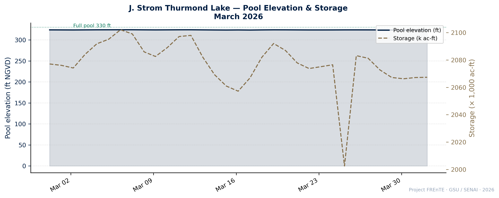
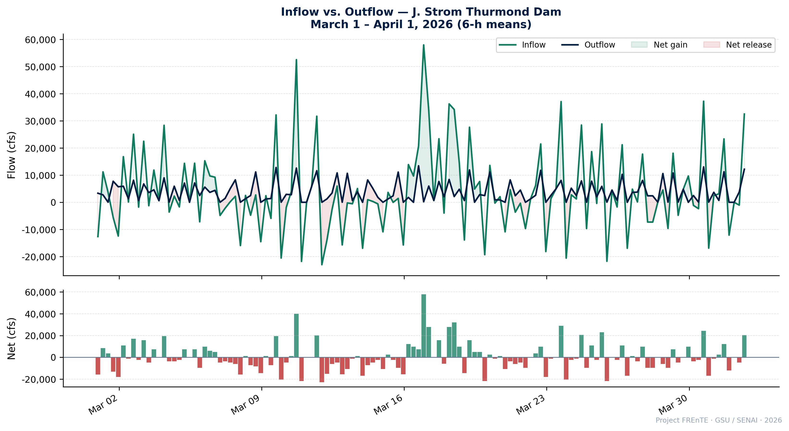
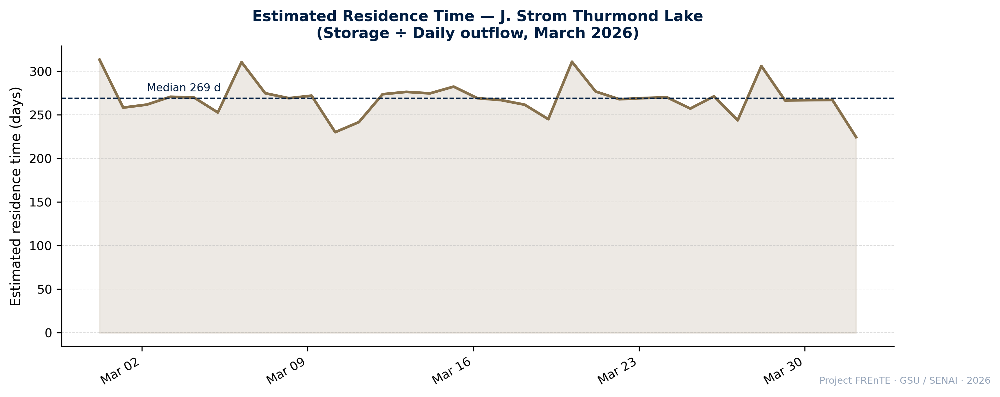
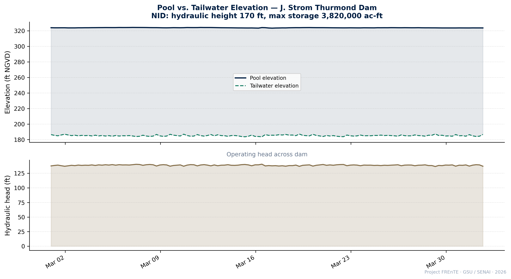

heighthydraulic height
170 ft
NID height 200 ft · dam length 5,680 ft
Exploratory Data Report · Clarks Hill Lake
First analytical handoff grounded in real USACE operational timeseries and NID structural data. Covers pool elevation, storage, inflow/outflow hydrograph, estimated residence time, and tailwater dynamics.
323.9 ft
Mean pool elevation (NGVD)
82.8%
Storage vs. normal capacity
~269 days
Estimated residence time (median)
4,140 cfs
Mean inflow — March 2026
overview Study context
J. Strom Thurmond Dam (formerly Clarks Hill Dam) is a USACE multipurpose dam on the Savannah River at the Georgia–South Carolina border, 22 miles upstream of Augusta. Completed in 1952, it serves flood-risk reduction, navigation, hydropower (~700 GWh/yr average), water supply, and recreation. It is operated as a system with Hartwell and Richard B. Russell dams immediately upstream. This report analyses one month of real operational data from the USACE SAS water portal collected on 2026-04-01.
calendar_month Data period
March 1 – April 1, 2026 · hourly / 15-min
database Sources
USACE SAS water.usace.army.mil · NID GA01701 · USGS 02193900
link Collection run
operational-collect-clarkshill-20260401-225924
NID structural data
heighthydraulic height
170 ft
NID height 200 ft · dam length 5,680 ft
water_fullnormal storage
2.51 M ac-ft
Max storage 3.82 M ac-ft · 23 Tainter gates
floodmax discharge
1,055,000 cfs
Spillway gates opened 6× since 1952
terraindrainage area
6,144 sq mi
Savannah River watershed above dam
Analytical figures

descriptionWhat it shows
Daily mean pool elevation (left axis, ft NGVD) and storage (right axis, × 1,000 ac-ft) throughout March 2026. The full-pool reference line at 330 ft provides operational context. Both series track together closely, confirming the pool–storage relationship is consistent with the stage–storage curve.
lightbulbInterpretation
Pool elevation oscillated between 323.3 and 325.1 ft — roughly 5–7 ft below full pool. Mean storage of 2.08 M ac-ft represents ~82.8% of normal capacity (2.51 M ac-ft), indicating a moderately sub-normal pool consistent with seasonal draw-down or regulated release operations in late winter.
Pool elevation range 323.3–325.1 ft · mean storage 2.08 M ac-ft (82.8% of normal capacity)

descriptionWhat it shows
Top panel: 6-hour mean inflow and outflow (cfs). Shading marks net gain (teal) and net release (red) periods. Bottom panel: net flow balance. A spike in inflow in mid-March reaches 123,567 cfs — a significant storm-pulse event that was largely attenuated before reaching the outflow.
lightbulbInterpretation
Mean inflow (4,140 cfs) slightly exceeds mean outflow (3,928 cfs), indicating a net storage gain over the month. The flood-pulse event (peak ~123,567 cfs inflow vs. ~31,260 cfs max outflow) demonstrates the dam's core flood-attenuation function: it absorbed the pulse and released a dampened signal downstream.
Peak inflow 123,567 cfs attenuated to 31,260 cfs outflow — flood attenuation ratio ~4× during the March storm event

descriptionWhat it shows
Estimated hydraulic residence time (τ) calculated daily as storage ÷ outflow converted to ac-ft/day. The median dashed line marks the central tendency. Range during March: 225–287 days, median ~269 days.
lightbulbInterpretation
A residence time of ~270 days is characteristic of large impoundments with low relative throughput. This long τ has direct implications for sediment and nutrient accumulation, thermal stratification persistence, and water-quality dynamics — key inputs for the depositional-zone analysis in this study. The dip in mid-March reflects the flood-pulse outflow release event.
Median τ ≈ 269 days — long residence time supports sediment accumulation and thermal stratification modeling

descriptionWhat it shows
Top panel: pool and tailwater elevation (ft NGVD) at 6-hour resolution. The shaded area is the operating hydraulic head across the dam. Bottom panel: operating head directly, reflecting hydropower generation potential and downstream scour conditions.
lightbulbInterpretation
Tailwater responds rapidly to outflow releases, compressing the operating head during high-release events. The NID hydraulic height is 170 ft; the observed operating head during this period is considerably lower, indicating the dam is operating well below maximum head — consistent with a pool ~7 ft below full-pool target and regulated outflow.
Tailwater dynamics show rapid response to release events — relevant to downstream scour and depositional zone mapping
Still pending